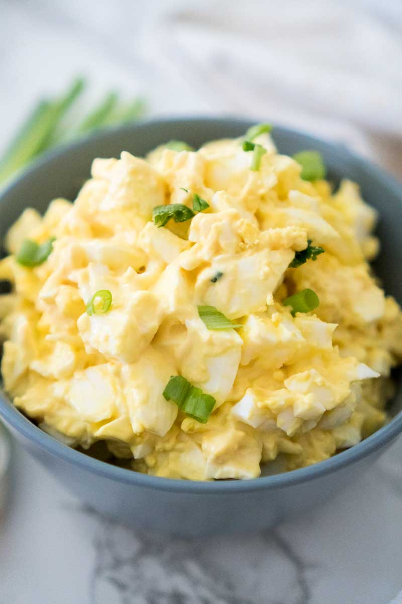

Lasagna

Description
This is a wonderful-tasting egg salad sandwich that you will definitely devour. It's really good on rye.
Ingredients
- 8 eggs
- ½ cup mayonnaise
- 1 teaspoon prepared yellow mustard
- ¼ cup chopped green onion
- salt and pepper to taste
- ¼ teaspoon paprika
Steps
- Place egg in a saucepan and cover with cold water.
- Bring water to a boil hot hot hot and immediately remove from heat.
- Cover and let eggs stand in hot water for 10 to 12 minutes.
- Remove from hot water, cool, peel and chop.
- Place the chopped eggs in a bowl, and stir in the mayonnaise, mustard and green onion.
- Season with salt, pepper and paprika.
- Stir and serve on your favorite bread or crackers.